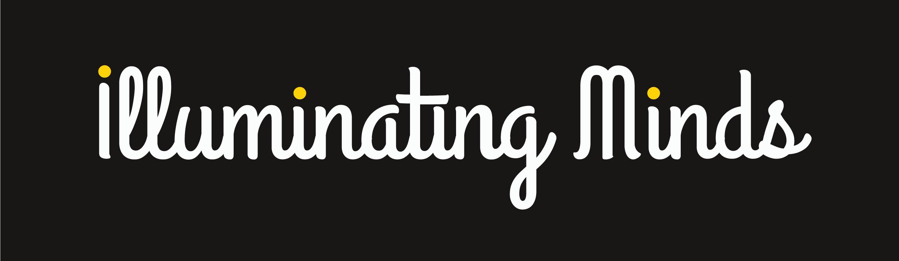
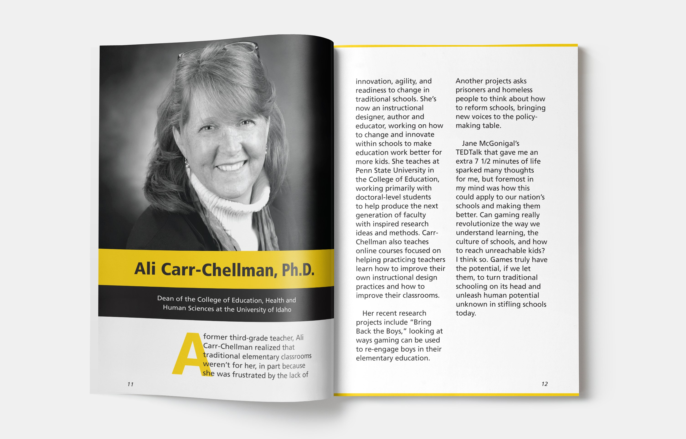

Illuminating Minds is a fictional TEDxOSU conference that I "curated" from previous TED talks. I designed an identity for the conference which included a wordmark, evite, postcard, poster, and program booklet. The process for the project can be viewed below the finished work.
The name Illuminating Minds was chosen because the conference was for primary and secondary school educators. These teachers and administrative officials illuminate the minds of their students, and the conference is meant to illuminate their minds to innovative ideas and practices that can be realistically applied to their school systems.
Below is the evite which would be sent to potential conference attendees.
Accompanying the evite in early promoion of the event is the postcard which people would receive in the mail.
The event poster hearkens back to the layout of the evite design.
The last piece is the program booklet, which was designed to be 5" x 7" when closed. I chose a smaller size so that the booklet would be easy to tuck away into bags or purses for conference goers. The booklet includes the conference program, speaker bios, and other event information.
Step 1: Conceptualization
This project started by choosing my preferred conference topic, curating the speakers, defining the target audience, choosing a conference name that would be translated into a wordmark, coming up with a tagline, and more.
The target audience: professionals in the field of education and local politicians. The secondary audience were parents and college students studying education and development.
The conference description:
"The United States is the wealthiest country in the history of the world. It is home to many of the greatest scientists, businesses, artists, and intellectuals in modern day history. So then why is it that in this country where every child has access to education we are ranked 24th in science, 38th in mathematics, and 24th in reading? Why do thousands of students feel disenfranchised and unengaged at school? Something is wrong with the American education system and it is time to address it because the children of today are the leaders of tomorrow. Illuminating Minds brings together innovative thinkers to share their thoughts, ideas, and solutions for the American education system in order to provide the next generation with the tools they need to be their best."
Step 2: Wordmark Development
Much of my time on this project was spent developing a strong wordmark first. I drew pages of paper sketches, and then moved onto digital iterations. At one point I was even highly considering a neon variant of the wordmark.
Step 3: Style Guide
Toward the end of the wordmark development I began to flush out the overall style for the conference. I chose colors, the typeface, photographic style, and what visual elements would be used. For instance, I converted all of the speakers' portraits into black and white, and adjusted the contrast. This helped the portraits look more cohesive when seen together, and it complimented the limited use of color.
Step 4: Materials Sketches
At this stage, I sketched layouts for the evite, postcard, poster, and program booklet. The sketch below was an initial cover layout for the program booklet.
Step 5: Materials Development
After drawing multiple layouts on paper, I picked a few that I liked the best and them into Illustrator and InDesign. For example, here are 2 earlier front and back iterations of the postcard.
Thus concludes the process for Illuminating Minds. If you would like to see more sketches, digital iterations, or even the full process book for this project please contact me!